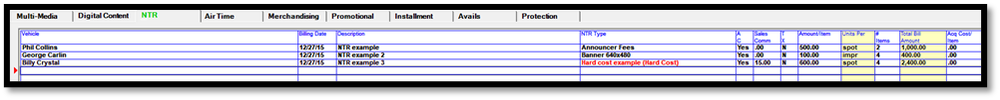
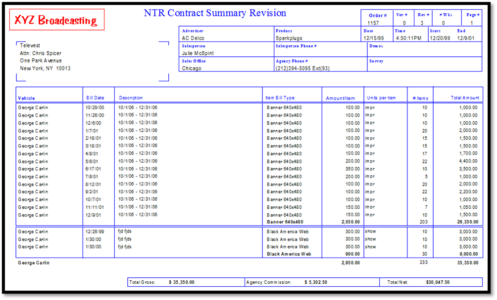
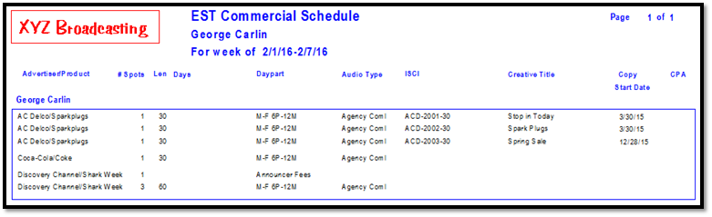
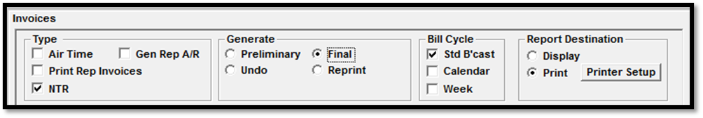
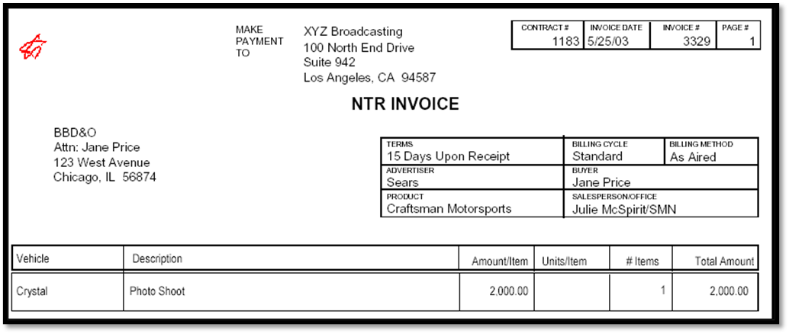

NTR Procedures
The basic workflow for NTR is as follows:
- Enter the NTR items on the Proposal/Order.
- Print NTR orders using the Proposals/Contract report.
- Proof the contract prior to billing by running the NTR Recap Report or printing and reviewing the NTR Preliminary Invoices.
- Generate NTR invoices. This will create the invoices for NTR and Hard Cost items that have been entered for the billing period.
- Follow normal Accounting Procedures to post cash to the billed NTR items.
NTR Entry on Contracts
The Proposals and Orders screen is used to enter NTR items on a contract. The NTR tab is used for entering NTR (shown below).

The following fields appear on the NTR screen:
Vehicle: displays the vehicle name that the NTR row applies to.
Billing Date: the date the NTR will be billed.
Description: a text description of the NTR item.
NTR Type: the NTR type is selected from the dropdown menu in this field. New NTR types can also be entered by selecting “New” and adding the new NTR type. Hard cost items are shown in red. Note: hard cost items are excluded from this list on contracts that include a trade percentage.
AC (agency commissionable): can be set to Yes or No, however, if the advertiser is a direct advertiser, then the only agency commissionable option is “No”.
Sales Commission: the salesperson commission default is defined for each NTR item but it can be altered as needed for each line.
Taxable: each line may be taxable, and if it is taxable, it will be taxed at the rate that is defined in Traffic Site Options, on the Invoicing tab.
Amount/Item: the dollar amount per item.
Units Per: this is a read only field that is defined with the NTR item type.
# Items: the number of items this line will be for.
Total Bill Amount: this is a read only field that is calculated by multiplying the amount per item by the number of items.
Acq Cost/Item: used for any acquisition cost associated with the item.
To add an NTR item to a contract:
- Click the NTR tab.
- Select the vehicle. NTR items (NTR and/or Hard Cost) can be entered for any conventional, sports, selling, rep vehicle, or NTR vehicle. If the vehicle has participant splits defined for the air time revenue, it will also split the NTR revenue
- Enter the billing date of item (NTR invoices can be generated throughout the month once the billing date is in the past.)
- Enter a description, which will appear on the NTR paperwork and invoice. The description can be up to 80 characters.
- Select the NTR Type, which is used for reporting purposes.
- Enter whether the item is agency commissionable. Agency commission is designated by Yes or No and can be different from the air-time portion.
- Enter the sales commission if applicable. The sales commission default is defined for each NTR item and can be altered for each line entered.
- Each line may be taxable, if it is taxable, it will be taxed at the rate that is defined in the Site Options -> Invoice tab.
- Enter the dollar amount per item.
- Enter the number of items.
- Enter any acquisition costs associated with the item.
The NTR gross will be shown in the bottom right corner on the Proposal/Orders screen.
Proposals/Contracts Report
The Proposals/Contracts report is used to print the contract, including the NTR.
When running the report, the NTR summary is automatically included in the Summary portion, as shown below.

NTR Items on Logs
Log format L87 includes NTR items if certain requirements are met:
- The Vehicle Type must be set to Podcast in Vehicles -> Options -> General.
- “Show Title” must be set to Yes in Vehicles -> Options -> Logs.
- The NTR item must be ordered in the week for which the log is being generated.

NTR Invoicing Procedures
NTR vehicles can be billed throughout the month, and can either produce a separate invoice, or be included with the air time portion. Accounts Receivables is updated with the invoice and the NTR Items are billed. They will appear ‘green’ in the Special Billing Screen.

Final Invoices can be selected for Air Time, Gen Rep A/R, Print Rep Invoices and NTR simultaneously. They do not need to be selected individually. The NTR dates to be billed will be shown in the NTR Billing box. Select the Generate button when you are ready to print your invoices. Refer to the Invoice Procedures help document for a complete explanation of the Invoice screen.
Invoice Check Programs
The following checks can be performed before running final invoices for NTR:
- Print the NTR Recap Report by billing date and NTR Type. Use this report to check the input and items, such as the following:
- Agency commission Y/N is correctly answered.
- Salesperson commission is defined if needed.
- Taxable items are correctly defined.
- Total amount to bill is correct.
- Additional Check: Print Preliminary Invoices and verify:
- Client Address information.
- Agency vs. Direct Advertiser.
- If this client is a direct advertiser and should have an agency, you need to add the agency on the order screen and in Lists, turn off the direct option for the advertiser.
- If this client should not have commission, you should define the advertiser as direct or change the agency commission option on the NTR Input - Special Billing Screen from Y to be N for the item to be billed.
Final Invoice Example
The final invoice is automatically assigned an invoice number. When the final invoice is generated, the accounts receivable is updated for the transaction.

NTR Invoice Envelopes
You can change the printing of the NTR Invoice to fit a standard #10 window envelope. This can be done by modifying two settings in Site Options -> Invoice: “# Lines to Skip” and “Between Log and Address”.
If you have a standard #10 window envelope set question #2 to have a value of three (3).
Both questions are preset to zero, if you wish to use a different envelope:
- Print a sample invoice, either with Reprint or Preliminary.
- If you are using an envelope with one window, skip to step 3. If the envelope has two windows, and the logo is not centered in the first window, make an educated guess as to how many lines to add to the Site Options settings and reprint the invoice (obtain a password from support@counterpoint.net ).
- Repeat step 2 until the address is centered.
NTR Accounting
The NTR items invoiced amounts are updated in accounts receivables. All accounts receivables reports have the ability to include or exclude NTR revenue. Cash, adjustments, and any other transactions can be entered in the Collections Screen the same way air time cash is posted.
Hard Cost items are never combined with receivables revenue, and are always shown separately. Hard Cost items are included when the NTR option is selected, unless it has its own selectivity option.
Revenue reports have the option to include or exclude NTR. There are also specific reports to show the NTR revenue. NTR items can be cash or trade depending on how the order is defined.